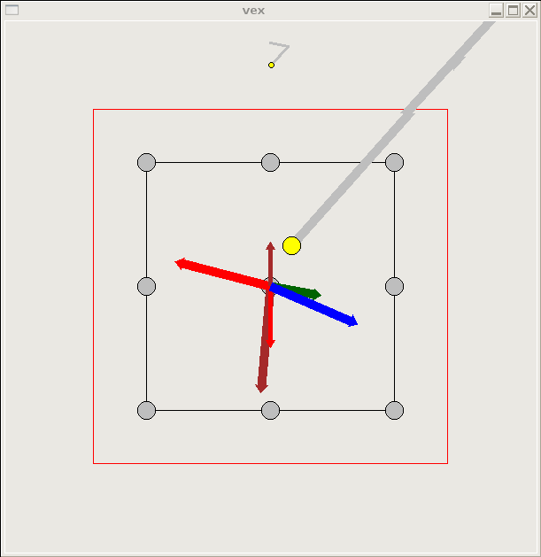
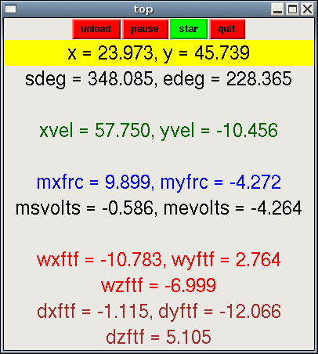

vex is a GUI (Graphical User Interface) program that provides a real-time moving picture graphics and text display of the state of the InMotion2 planar robot system. This note discusses how to run vex, and then how it works.
vex only works for the planar robot, not for any of our other robots. You may look at the system state of our other robots with the "display" program, but this only shows numeric outputs, not graphical vectors.
The load button starts off green. If you press it, the LKM takes a second or two to load, then the load button is relabeled unload and it turns red. When you press unload, the control loop is paused and the LKM is unloaded from kernel memory.
The run button starts off green. If you press it, the control loop starts running, then the run button is relabeled pause and it turns red. When you press pause, the control loop is paused, and no commands are read from or written to system sensors or motors.
The star button tells the robot system to run a procedure that moves the robot arm tip between the origin and the eight compass directions represented by gray spots on the vex display. Center, north, center, northeast, center east, center southeast, and so forth. The controller algorithm for this procedure tries to guide the tip of the arm along a straight path, if you push the arm away from this path, the arm will draw you back to the path with feedback that feels springy.
The star procedure will not run unless the LKM is already loaded and running. The button is green, and doesn't change color when pressed (an oversight).
Always hold on to the manipulandum handle and pay attention, when running any procedure that applies motor forces to the robot arm.
The red quit button pauses the robot, unloads the LKM, shuts down shared memory, and quits the vex application. If you do not use the quit button to stop vex (but you exit with a control-C interrupt instead), the system will not be able to deallocate kernel module, process, and shared memory resources, and you will have to do it by hand by running the stop script and running ps to check process status.
The vex display has two panels.
1) a canvas panel with a graphical representation of the vectors:

2) a text panel with a numeric representation of the vectors:

The vectors on the canvas panel start at the (0,0) origin point at the center of the canvas, which represents a point offset in Y .55 meters from the center of the robot motors. This origin point is different in different software configurations. For instance, in pediatric protocols, we move the origin point toward the patient, so that children with shorer arms can reach the furthest game targets.
The variables in the text panel are shown with three digits of precision after the decimal point, but they are stored in the software system as 64-bit floating point values with precision and accuracy bounded by the design of the sensors and algorithms used in the software system.
Vectors are displayed in different colors. These colors are coordinated between the vectors in the graphical canvas window and the data values in the numeric text window.
vex displays the following data:
If you think of the robot arm as a very fancy mouse, the X/Y position is its cursor on the screen, represented by a yellow dot. Other vector data is shown with arrows. The gray line that connects to the yellow dot shows the position of the elbow link (that looks like the robot's "forearm"). At the top of the graphical display, there is a small representation of the link angles. You may scroll the vex display up and down to see the shoulder link position by using the up and down arrows at the right side of your keyboard.
If you move the arm to make the X/Y position rotate in a circle centered at the origin, the gray position line will be perpendicular to the green velocity line. (You may think of the gray line as a virtual lever arm, drawn between the origin and the arm tip.)
The units are displayed here as millimeters, though the system really keeps these in meters. In vex, a .3mm square pixel on the screen corresponds to a 1 mm square on the workstation tabletop. (On a 1024/768 15" screen, a pixel is about .3mm square).
These angles are the offset in degrees of the shoulder (top) and elbow (bottom) links from zero, which points to the right as you sit facing the robot in the workstation chair. These angles come from encoders placed in the motor housings. The encoders sense absolute angles. Most of the robot system uses these angles in radians, but for this display it is more user-friendly to show degrees.
The X and Y velocity are usually generated in software by differentiating the X and Y position over time. This software velocity smoothed with a Butterworth filter. You may get both the smoothed or raw soft velocity from the system. Some of our older robots have a tachometer that measures and senses the velocity directly. It is quite expensive and not much better than the software method.
The X and Y force commands dictate the haptic feedback that the robot arm gives to the patient. It can make the arm feel stiff or springy, smooth, rough, viscous, and so forth. The motor force commands are calculated by controller algorithms suited to each robot task. The X and Y force commands are converted to shoulder and elbow torques, and these torques are converted to voltages which are sent to each motor.
The motor command voltages are the raw commands that get sent to each motor. After forces are computed by the controller algorithms and converted to motor torques and finally to voltages, these voltages are checked to make sure they don't exceed a maximum safe value, typically +/-5 volts. If one of the voltages does exceed 5 volts, both voltages are attenuated in proportion, in order to preserve the orientation of the force vector. In the robot software, this attenuation is called PFO, Preserve Force Orientation.
wxftf, wyftf, wzftf - X, Y, and Z force transducer forces in world space (Newtons)
The tip of the arm is usually fitted with a force transducer that senses forces at the tip in X, Y, and Z. It also senses rotational moments around X, Y, and Z. The moments are measured by the software but are not displayed by the vex program.
These forces are returned in world space, with respect to the workstation tabletop. +Z is up, +X is right, +Y is toward the robot. Two vectors are displayed to represent these three dimensions, a wide red one for X/Y, and a narrow red one (that only goes up and down) for Z. If you hold the arm stationary and pull the manipulandum handle toward the right, the wide red vector will point to the right on the screen.
Notice that if you run a controller that tries to move the manipulandum smoothly and slowly, and you hold the tip in place steadily, the blue X/Y force command vector will be equal and opposite to the red X/Y force transducer force vector, because the force transducer will be measuring your force exactly resisting the robots command forces.
The force transducer is a hockey-puck-shaped device that travels at the tip of the robot arm, and its orientation changes as the arm moves around the workstation tabletop, just like if you rested your arm on the tabletop and pointed a finger and swung your arm around in the horizontal plane, your finger would point in different directions.
Forces are sensed with respect to the physical force transducer device itself. Our current force transducer ("JR3") has the device's cable positioned in its -X direction, and it is positioned with that cable to the lower right, so if you pull the handle toward the cable, the display will show the device X/Y force vector pointing left (to -X).
The software takes the force transducer forces returned in device space and transforms them using the shoulder and elbow angles returned by the encoders to calculate the world space forces.
The length of the world and device X/Y vectors will always be the same, because they both represent the same force transformed to point in different directions in the plane.